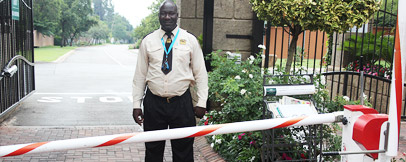

- Wide Range of Services: 42nd Precinct Security offers a variety of services, including armed response, CCTV installations, guarding, gate motor installations, electric fencing, alarms, and maintenance. This diversity allows employees to gain experience in multiple areas of security.
- Geographical Reach: The company operates in various locations, including Johannesburg, Midrand, Pretoria, East Rand, and West Rand. This wide geographical reach provides employees with the opportunity to work in different environments and contexts.
- Diverse Clientele: 42nd Precinct Security’s clients include schools, shopping centers, townhouse and building complexes, as well as buildings and office blocks. Working with such a diverse clientele can be a valuable learning experience.
- Quality of Services: The company prides itself on the quality of services it offers to its clients. This commitment to quality ensures a professional work environment.
- Compliance with Regulations: 42nd Precinct Security is a fully compliant PSIRA registered service provider. This compliance with industry standards and regulations demonstrates the company’s commitment to operating within the law, which can provide employees with peace of mind.
- Opportunities for Growth: The company offers a range of services, which could provide employees with opportunities for learning and career growth.
Mission Statement
To grow organically and promote innovation. We will deliver services to our clients upholding core values of Honesty, Integrity, and Trust (HIT). In addition, we will strive to become recognized as a reliable leading supplier of quality pro-active security services.
Why Work for Us?
Vacancies
Security Officer
Requirements:- Valid PSIRA certificate (minimum grade C, D, or E)
- NSC/School-Leaver's Certificate
- SARS Reference Number
- History of Employment
- Last Pay Slip
-
Optional:
- Letter of Reference from Previous Employer
Armed Response Officer
Requirements: Requirements:- Valid PSIRA certificate (minimum grade C, D, or E)
- NSC/School-Leaver's Certificate
- Driver's License
- SARS Reference Number
- History of Employment
- Last Pay Slip
-
Optional:
- Letter of Reference from Previous Employer
Employment Application
Google Form should be here